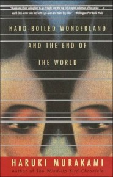

There ought to be a name for the genre Murakami ( A Wild Sheep Chase ) has invented, and it might be the literary pyrotechno-thriller. The plot here is so elaborate that about 100 pages, one-fourth of the book, elapse before its various elements begin to fit together, but Murakami's lightning prose more than sustains the reader. Embellished with witticisms, wordplay and allusions to such figures as Stendhal heroes and Lauren Bacall, the tale is set in a Tokyo of the near future. Thanks to a wonderland of technology, an intelligence agent has had his brain implanted with a ``profoundly personal drama'' that allows him to ``launder'' and ``shuffle'' classified data, and all that he knows of the drama is its password, The End of the World. But after interference from a scientist and from the Semiotecs, a rival intelligence unit, the subconscious story is about to replace the agent's own perceptions of reality. Intertwined with the agent's attempts to understand his plight are scenes from The End of the World. Murakami's ingenuity and inventiveness cannot fail to intoxicate; this is a bravura performance. (Sept.)